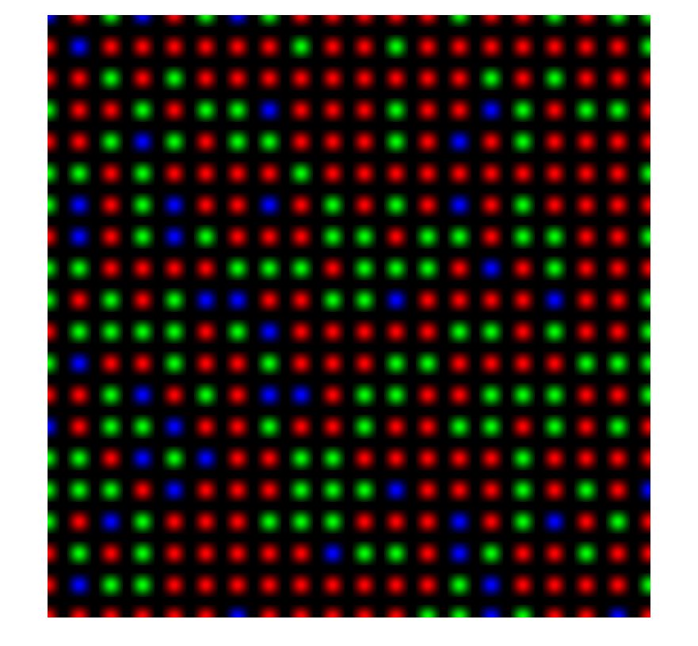
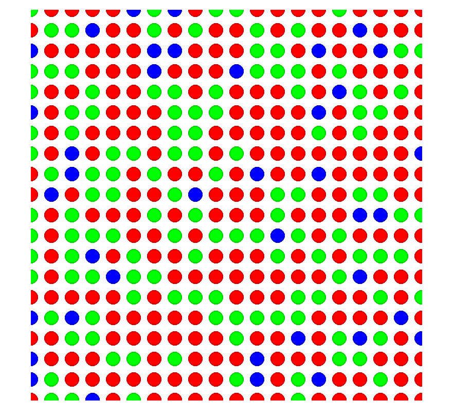
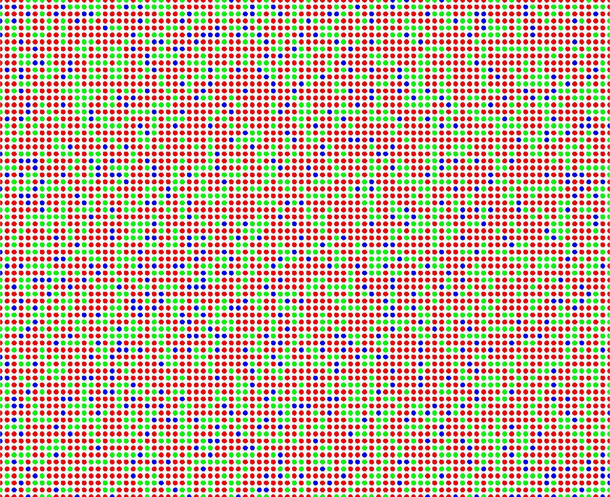
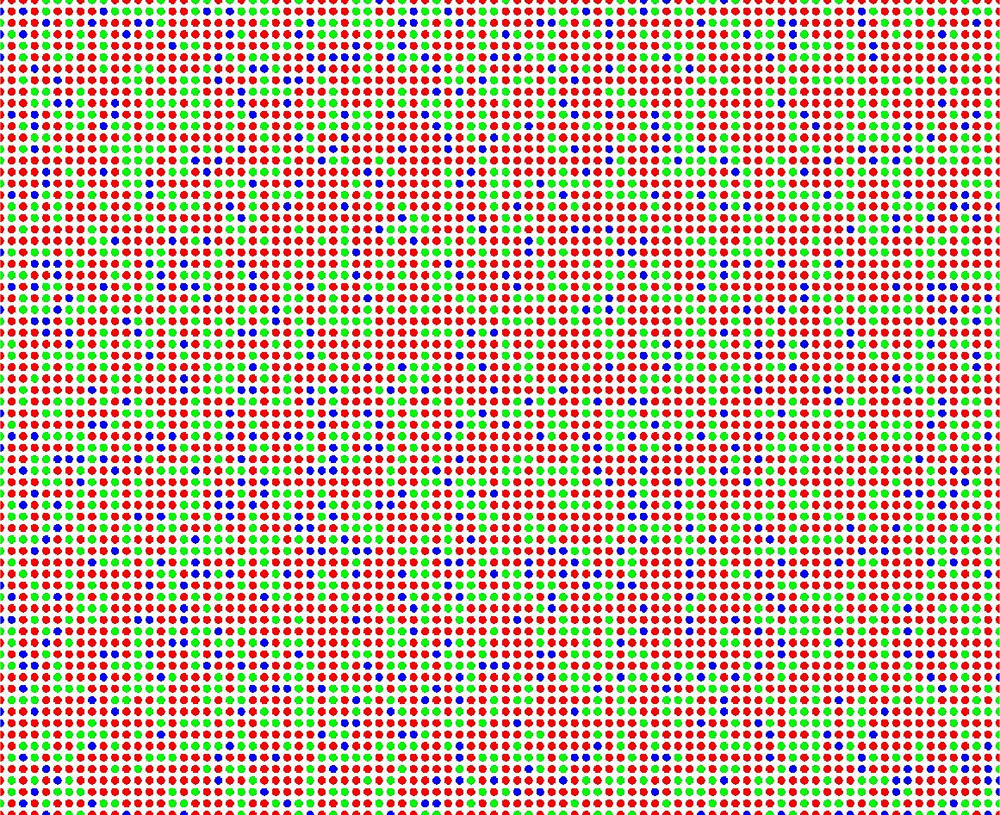

t_GenerateConeMosaicImageUsingNativeISETBIOfunctions
Show an anterlative way to make a nice viewable image of a cone mosaic, as well as an image representing the photon responses using native ISETBIO functions.
NOTE: There are ways to produce these images that do not call the ISETBIO functions conePlot and coneSensorPlot (see t_GenerateConeMosaicImage)
6/29/2015 NPC Wrote it.
sensor = sensorCreate('human'); % extract central 20x20 cones patch conesToPlot = 20; coneSize = 30; [xy,coneType, support,spread,delta] = conePlotHelper(sensor, conesToPlot, coneSize); whiteBackground = false; [~,~,~, coneMosaicStandardImage] = conePlot(xy,coneType, support,spread,delta, whiteBackground); whiteBackground = true; [~,~,~, coneMosaicWRImage] = conePlot(xy,coneType, support,spread,delta, whiteBackground); % Plot images h = figure(1); set(h, 'Name', 'standard style cone mosaic', 'Position', [400 400 100 100]); clf imshow(coneMosaicStandardImage); truesize; h = figure(2); set(h, 'Name', 'Williams/Roorda style cone mosaic', 'Position', [860 400 100 100]); clf imshow(coneMosaicWRImage); truesize; % or alternatively (plot the entire mosaic) whiteBackground = false; [support, spread, delta, coneMosaicImage] = sensorConePlot(sensor, support,spread,delta,whiteBackground); h = figure(3); imshow(coneMosaicImage) whiteBackground = true; [support, spread, delta, coneMosaicImage] = sensorConePlot(sensor, support,spread,delta,whiteBackground); h = figure(4); imshow(coneMosaicImage)
Warning: Image is too big to fit on screen; displaying at 33% Warning: Image is too big to fit on screen; displaying at 33% 
 
